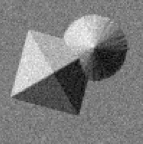
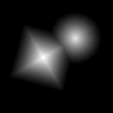

Broad Bioimage Benchmark Collection
Annotated biological image sets for testing and validation
Synthetic DIC Images
Accession number BBBC029 · Version 1
Example images
-

DIC images -

Ground truth
Images
The dataset includes 218 simulated Differential Interference Contrast (DIC) images of 20 different binary and grayscale objects with various rotations. The images are available in noise-free version as well as with 20 dB white Gaussian noise. The DIC point spread function is also included.
Ground Truth F
The images that were used for DIC image generation are provided as ground truth images. The ground truth images are the same for the noise-free and noisy DIC images. The suggested metric for measuring a DIC reconstruction algorithm's accuracy is the Mean Squared Error (MSE) value between the corresponding reconstructed and ground truth image.
Published results using this image set
The proposed data set will be evaluated in a publication to be submitted.
Recommended citation
"We used image set BBBC029v1 [Koos, K., Molnár, J., Kelemen, L., Tamás, G., & Horvath, P. (2016). DIC image reconstruction using an energy minimization framework to visualize optical path length distribution. Scientific reports, 6.] from the Broad Bioimage Benchmark Collection."
Copyright
 The BBBC029v1 image set
are licensed under a Creative Commons Attribution 3.0 Unported License by Peter Horvath and Krisztián Koós.
The BBBC029v1 image set
are licensed under a Creative Commons Attribution 3.0 Unported License by Peter Horvath and Krisztián Koós.